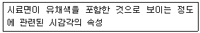

컬러리스트기사 (2017-03-05 기출문제)
1과목: 색채심리 마케팅
1. 색채 시장조사 기법 중 서베이(Survey) 조사에 대한 설명으로 틀린 것은?
- 일반 소비자들의 제품구매 및 이용 상황에 대한 정보를 수집하고 분석하는 방법이다.
- 조사원이 직접 거리나 가정을 방문하여 조사하는 방법이다.
- 조사의 주목적은 시장 점유율의 변화와 마케팅 변화의 변수를 파악하는 것이다.
- 기업의 전반적 마케팅 전략수립의 기본 자료를 수집하기 위한 조사로 활용된다.
(정답률: 36%)

2. 색채마케팅에서 표적고객에게 광고를 통해 가장 내세우고자 하는 제품의 특징을 의미하는 용어는?
- 소구점
- 카피
- 일러스트레이션
- 배열
(정답률: 56%)
3. SD법(Semantic Differential Method)을 활용한 색채 이미지 조사법에 대한 설명 중 클린 것은?
- 색채 감성의 객관적 척도이다.
- 단색에 대한 상대적인 비교 평가가 가능하다.
- 색상이 다르면 항상 다른 형용사로 표현된다.
- 색채 기획 과정에서 의미 공간 내 이미지의 위치를 찾을 수있다.
(정답률: 53%)
4. 형광등 또는 백열등과 같은 다양한 조명아래에서도 사과의 빨간색이 달리 지각되지 않는 현상을 무엇이라 하는가?
- 착시
- 색채의 주관성
- 패흐너 효과
- 색채 항상성
(정답률: 82%)
5. 색채의 공감각적 특징을 옳게 연결한 것은?
- 비렌 – 빨강 - 육각형
- 카스텔 – 노랑 – E 음계
- 뉴턴 – 주황 – 라 음계
- 모리스 데리베레 – 보라 - 머스크향
(정답률: 64%)
6. 소비자구매심리 과정을 파악할 수 있는 AIDMA에 속하지 않는 것은?
- Attention
- Interest
- Design
- Action
(정답률: 90%)
7. 다품종 소량생산체제로 변화되는 최근의 시장은 표적 마케팅을 지향한다. 표적 마케팅은 세 단계를 거쳐 이루어지는데 다음 중 옳은 것은?
- 시장 표적화 → 시장 세분화 → 시장의 위치 선정
- 시장 세분화 → 시장 표적화 → 시장의 위치 선정
- 시장의 위치 선정 → 시장 표적화 → 시장 세분화
- 틈새 시장분석 → 시장 세분화 → 시장의 위치 선정
(정답률: 72%)
8. 21세기의 유행색 중 주도적 색채이며, 디지털 패러다임의 대표색으로 분류되는 색채는?
- 베이지색
- 연두색
- 빨간색
- 청색
(정답률: 60%)
9. 소비패턴에 따른 소비자 유형 중 특정 상품에 대한 선호도가 높아 재구매율이 높은 집단은?
- 감성적 집단
- 신소비 집단
- 합리적 집단
- 관습적 집단
(정답률: 68%)
10. 처음 색을 보았을 때보다 시간이 지나면서 그 특성이 약해지는 현상은?
- 잔상색
- 보색
- 기억색
- 순응색
(정답률: 65%)
11. 색채치료에 있어서 색상과 치료효과가 바르게 연결된 것은?
- 빨강 – 소화장애, 당뇨, 습진
- 노랑- 빈혈, 내분비기관 장애, 천식
- 파랑 – 충수염, 호흡기 질환, 경련
- 보라 – 방광질환, 골격성장장애, 정신질환
(정답률: 68%)
12. 컬러 마케팅에 사용되는 메슬로우(Maslow)의 욕구단계 중 가장 상위계층에 속하는 것은?
- 생리적 욕구단계
- 안전 욕구단계
- 사회적 욕구단계
- 자아실현 욕구단계
(정답률: 89%)
13. 환경색채의 영향으로 틀린 것은?
- 지역 거주자의 생활에 영향을 준다.
- 의식적·무의식적 행동을 유발한다.
- 자연환경인 기후와 일광에 영향을 준다.
- 지역의 자연적·인공적 특징을 형성한다.
(정답률: 55%)
14. 공장의 근로자들이 실제 근무시간을 보다 짧게 인식할 수 있도록 실내 환경색채를 적용하려고 한다. 이때 사용할 가장 적합한 색은?
- 파랑
- 빨강
- 노랑
- 하양
(정답률: 68%)
15. 색채마케팅을 위한 마케팅(marketing)의 기초이론에 대한 설명 중 틀린 것은?
- 마케팅이란 개인이나 집단이 상호 제품과 가치를 창출하고 교환하여 그들의 욕구를 충족시키는 사회적 관리의 과정이다.
- 마케팅의 기초는 인간의 욕구에서 출발하는데 욕구는 필요, 수요, 제품, 교환, 거래, 시장 등의 순환고리를 만든다.
- 인간의 욕구는 매우 다양하므로 제품에 따라 1차적 욕구와 2차적 욕구를 분리시켜 제품과 서비스를 창출하는 것이 좋다.
- 마케팅의 가장 기초는 인간의 욕구(needs)로, 메슬로우는 인간의 욕구가 다섯 계층으로 구분된다고 설명하였다.
(정답률: 82%)
16. 마케팅에서의 색채 역할과 사용에 대한 설명으로 가장 거리가 먼 것은?
- 주변 제품과의 색차를 고려하여 색채를 선정한다.
- 경기가 둔화되면 다양한 색상·톤의 제품이 선호된다.
- 제품이 가지고 있는 기능과 품질에 충실한 색채를 기획해야 한다.
- 저비용 고효율을 목적으로 제품의 색채를 변경하였다.
(정답률: 72%)
17. 색채정보를 조사하기 위해 사용되는 연구방법으로 거리가 먼것은?
- 표본조사방법
- 현장관찰법
- 추리관찰법
- 패널조사법
(정답률: 82%)
18. 요하네스 이텐은 색과 모양의 조화로운 관계성을 연구하였다. 색과 형태의 관계에 대한 설명 중 틀린 것은?
- 노랑은 명시도가 높은 색으로 뾰족하고 날카로운 느낌을 준다.
- 파랑은 차갑고 투명한 영적인 느낌을 주는 색으로 동그라미를 연상시킨다.
- 빨강은 주목성이 강하고 단단한 느낌을 주기 때문에 마르모꼴이 연상된다.
- 수직과 수평선의 특성이 있는 모양은 사각형과 관련이 있다.
(정답률: 76%)
19. 환경문제를 생각하는 소비자를 위해서 천연재료의 특성을 부각시키거나 제품이 갖는 환경보호의 이미지를 부각시키는 '그린마케팅'과 관련한 색채마케팅 전략은?
- 보편적 색채전략
- 혁신적 색채전략
- 의미론적 색채전략
- 보수적 색채전략
(정답률: 69%)
20. 작업환경에서 색채의 역할과 관련이 없는 것은?
- 생산성 향상
- 안정성 저하
- 작업 재해 감소
- 쾌적한 작업환경
(정답률: 87%)
2과목: 색채디자인
21. 시지각 원리에 근거를 둔 추상적, 기계적 행태의 반복과 연속 등을 통한 시각적 환영, 지각 그리고 색채의 물리적 및 심리적 효과에 관련된 착시의 회화는?
- 팝아트
- 옵아트
- 미니멀리즘
- 포스트모더니즘
(정답률: 59%)
22. 러시아 구성주의자인 엘 리시츠키의 작품을 일컫는 대표적인 조형언어는?
- 팩투라(factura)
- 아키텍톤(architecton)
- 프라운(proun)
- 릴리프(relief)
(정답률: 40%)
23. 공간의 색채계획으로 적절하지 않은 것은?
- 보조색은 면적의 비례에서 5% ~ 10%를 차지한다.
- 장기체류의 공간은 색채배색이 두드러지지 않아야 한다.
- 색의 사용은 천장 – 벽 – 바닥의 순으로 어두워져야 한다.
- 디자인 분야별로 주조색의 선정방법은 다를 수 있다.
(정답률: 72%)
24. 상업용 공간의 파사드(facade) 디자인은 어떤 분야에 속하는가?
- exterior design
- multiful design
- illustration design
- industrial design
(정답률: 68%)
25. 디자인을 할 때, 필수적으로 고려할 필요가 없는 것은?
- 실용성
- 심미성
- 경제성
- 역사성
(정답률: 86%)
26. 자극의 크기나 강도를 일정방향으로 조금씩 변화시켜 나가면서 그 각각 자극에 대하여 '크다/작다, 보인다/보이지 않는다.' 등의 판단하는 색채디자인 평가방법은?
- 조정법
- 극한법
- 항상법
- 선택법
(정답률: 29%)
27. 디자인의 기본 조건인 합목적성에 대한 설명으로 옳은 것은?
- 시대성, 유행, 개성이 복합된 것이다.
- 기능성과 실용성을 고려한 것이다.
- 사용될 재료, 실용성을 고려한 것이다.
- 창의적인 아름다움을 창조하는 것이다.
(정답률: 87%)
28. 다음 중 형과(Figure and Ground)의 법칙이 적용된 예로 적합하지 않은 것은?
- 가구와 벽면의 관계
- 건물표면과 간판의 관계
- 자연환경과 아파트의 관계
- 기업이미지와 상품의 관계
(정답률: 82%)
29. 색채계획에 따른 주조색, 보조색, 강조색의 배색에 대한 설명이 틀린 것은?
- 주조색 – 전체의 70% 이상을 차지하는 색이다.
- 주조색 – 전체의 이미지를 좌우하게 된다.
- 보조색 – 색채계획 시 주조색을 보완해주는 역할을 한다.
- 강조색 – 전체의 30% 정도이므로 디자인 대상을 변화시키기 어렵다.
(정답률: 74%)
30. 디자인에 관한 전반적인 설명 중 적합하지 않은 것은?
- 인간 생활의 목적에 맞고 실용적이며 미적인 조형을 계획하고 그를 실현하는 과정과 그에 따른 결과이다.
- 라틴어의 designare가 그 어원이며 이는 모든 조형 활동에 대한 계획을 의미한다.
- 기능에 충실한 효율적 형태가 가장 아름다운 것이며 기능을 최대로 만족시키는 형식을 추구함이 목표이다.
- 지적 수준을 가지고 표현된 내용을 구체화시키기 위한 의식적이고 지적인 구성요소들의 조작이다.
(정답률: 54%)
31. 색채계획을 함에 앞서 색채를 적용할 대상을 검토할 때 고려할 조건에 대한 설명이 틀린 것은?
- 거리감 – 대상과 사물의 거리
- 면적효과 – 대상이 차지하는 면적
- 조명조건 – 광원의 종류 및 조도
- 공공성의 정도 – 개인용, 공동사용의 구분
(정답률: 39%)
32. 좋은 디자인의 조건 중 여러 대(代는)를 거치면서 형태의 세련과 사용상의 개선이 이루어져 생태계에 유기적으로 적응하는 인간 중심의 디자인으로 적응하는 인간 중심의 디자인으로 나타나게 되는 것을 무엇이라고 하는가?
- 친자연성
- 문화성
- 질서성
- 지역성
(정답률: 50%)
33. 컬러 플래닝의 기획단계 조사항목이 아닌 것은?
- 환경요소
- 시설요소
- 인간요소
- 비용요소
(정답률: 54%)
34. 유니버설디자인의 7원칙에 해당되지 않는 것은?
- 누구라도 사용할 수 있고, 손에 넣을 수 있는 것
- 적은 노력으로 효율적으로, 편하게 사용할 수 있는 것
- 실수를 하면 중대한 결과가 초래되도록 할 것
- 접근하고 사용하는데 적절한 공간이 있을 것
(정답률: 75%)
35. 게슈탈트 시지각 원리에 해당되지 않는 것은?
- 근접성
- 연속성
- 폐쇄성
- 역동성
(정답률: 77%)
36. 다음 중 멀티미디어 디자인에 정보의 위치를 탐색하기 위하여 비교적 중요하게 다뤄지는 개념과 거리가 먼 것은?
- 사용성(usability)
- 가독성(legibility)
- 상호작용성(interactivity)
- 항해(navigation)
(정답률: 45%)
37. 다음 중 멀티미디어 디자인에서 정보의 위치를 탐색하기 위하여 비교적 중요하게 다뤄지는 개념과 거리가 먼 것은?(오류 신고가 접수된 문제입니다. 반드시 정답과 해설을 확인하시기 바랍니다.)
- 디자인의 원리에는 조화, 균형, 리듬, 통일과 변화가 있다.
- 리듬에는 반복, 점진, 방사, 황금분할이 있다.
- 디자인의 균형에는 대칭적 균형과 비대칭적 균형이 있다.
- 디자인에 있어 강조되는 요소는 다른 요소들과 변화 또는 대조를 이루도록 계획되어야 한다.
(정답률: 77%)
38. 효과적인 커뮤니케이션을 위한 연결이 틀린 것은?
- 소스: 메시지 송신자, 디자이너
- 메시지: 시각적 기호, 텍스트, 통신데이터
- 경로: 기호의 해석 및 시각화
- 수신자: 체험, 경험, 해석, 기호의 언어화
(정답률: 59%)
39. 하나의 상품이 특정 제조업체의 제품임을 나타내는 상품명이라고 불리어지는 것은?
- naming
- brand
- C.I
- concept
(정답률: 52%)
40. 신예술 야식이라 불렀으며 곡선적이고 장식적이며 추상형식이 유행하게 되었으며 유럽 전역으로 확대되었던 디자인 사조는?
- 아르데코
- 아르누보
- 미술공예운동
- 바우하우스
(정답률: 76%)
3과목: 색채관리
41. 디지털 색채의 특징에 대한 설명 중 틀린 것은?
- 디지털 색채는 가법혼색과 감법혼색 체계를 기본으로 한다.
- 디지털 색채에서의 가법혼색은 빛의 삼원색을 다양한 비율과 강도로 혼합하여 만들어진다.
- 모니터와 프린터의 색역(gamut)은 서로 다르다.
- 모니터와 프린터는 항상 동일한 프로파일을 갖는다.
(정답률: 88%)
42. 분광반사율에 대한 설명으로 틀린 것은?
- 회색계통의 색들은 반사율이 동일하게 나타난다.
- 밝은 색일수록 전반적으로 반사율이 높다.
- 채도가 높은 선명한 색일수록 분광 반사율의 차이가 크다.
- 반사율은 색채 시료의 특성에 따라 다르게 나타난다.
(정답률: 73%)
43. 다음 CCM의 과정 중에서 가장 마지막에 하는 일은?
- CCM 배색 처방 계산
- 기초 컬러런트 데이터 입력
- 시편 도장 또는 염색
- 표준색 측색
(정답률: 70%)
44. 광 측정 요소와 그 단위의 연결이 잘못된 것은?
- 광도 - K
- 휘도 - nt
- 조도 - lx
- 광속 - lm
(정답률: 46%)
45. 컬러런트(Colorant)에 대한 설명으로 틀린 것은?
- 컬러런트는 원색이며 하나의 색을 만들기 위해 색상을 만드는 역할을 한다.
- 색소는 안료와 염료로 구성된다.
- 안료는 친화력이 있어 별도의 접착제를 필요로 하지 않는다.
- 채도를 낮추기 위해 보색을 사용하는 것은 좋은 방법이 아니다
(정답률: 80%)
46. 육안조색 시 필요한 도구로 옳은 것은?
- 측색기, 어플리케이터, CCM, 측정지
- 표준광원, 어플리케이터, 스포이드, 믹서
- 표준광원, 소프트웨어, 믹서, 스포이드
- 은폐율지, 측색기 믹서, CCM
(정답률: 67%)
47. 육안검색 시 조명방법에 대한 설명이 옳은 것은?
- 자연주광의 특성은 변화기 쉬워 인공조명만 사용할 수 있다.
- 관찰자는 무채색계열의 의복을 착용해야 한다.
- 관찰자의 시야 내에는 시험할 시료의 색 외에 연한 표면색이 있어서는 안 된다.
- 시료면의 범위보다 넓은 범위를 균일하게 조명해야하며 적어도 500lx의 조도가 필요하다.
(정답률: 77%)
48. 컴퓨터 자동배색(Computer Color Matching)을 도입하는 목적 또는 장점이라고 할 수 없는 것은?
- 다품종 소량에 대응
- 고객의 신뢰도 구축
- 메타머리즘의 효율적인 형성과 실현
- 컬러런트 구성의 효율화
(정답률: 50%)
49. 디지털 색채 시스템에 대한 설명으로 옳은 것은?
- RGB: 빛을 더할수록 밝아지는 감법혼색 체계이다.
- HSB: 색상은 0도에서 360도 단계의 각도 값에 의해 표현된다.
- CMYK: 각 색상은 0에서 255까지 256단계로 표현된다.
- Indexes: 일반적인 컬러 색상을 칙셀 밝기 정보만 가지고 이미지를 구현한다.
(정답률: 70%)
50. 회화나무의 꽃봉오리로 황색염료가 되며 매염제에 따라서 황색, 회록색 등으로 다양하게 염색되는 것은?
- 황벽(黃蘗)
- 소방목(蘇方木)
- 괴화(槐花)
- 울금(鬱金)
(정답률: 47%)
51. 이미지의 투명성과 관련된 알파채널에서 향상된 기능 제공, 트루컬러 지원, 비손실 압축을 사용 하여 이미지 변형 없이 원래 이미지를 웹상에 그대로 표현할 수 있는 파일 포맷은?
- EPS
- PNG
- PSD
- PCX
(정답률: 87%)
52. 디지털 색채와 관련된 설명으로 틀린 것은?
- 1비트는 흑과 백의 2가지 색채 정보를 가진다.
- Full HD는 약 100만 화소로 해상도는 1366*768 이다.
- RGB를 채널당 8비트로 사용하는 겨우 약 100만 컬러의 표현이 가능하다.
- 컬러 채널당 8비트를 사용하는 경우 각 채널당 356단계의 계조가 표현된다.
(정답률: 48%)
53. 분광광도계의 특징으로 틀린 것은?
- 컴퓨터로 제어하고 고정밀 측정이 가능하며 투명색 측정도 가능하다.
- d/0, 0/d 광학계를 이용하여 투과색 측정이 가능하다.
- 분광분포를 얻을 수 있다.
- 표준광 D65를 기준광원으로 한다.
(정답률: 29%)
54. 색채측정기에 관한 설명으로 틀린 것은?
- CIE에서 광원과 물체의 반사각도, 그리고 관찰자의 조건을 표준화하였다.
- 측색기의 특성에 따라 분광광도계와 색차계를 이용하는 방법이 있다.
- KS A 0011에 제정되어 있다.
- 목적에 따라 RGB CMYK를 측정하는 측정기도 있다.
(정답률: 38%)
55. 안료에 대한 설명이 틀린 것은?
- 백색안료 중에는 바라이트, 호분, 백악, 클레어, 석고 등의 체질안료가 있다.
- 안료는 성분에 따라 무기안료와 유기안료로 분류한다.
- 무리안료 중에는 백색의 색조를 띠는 백색 안료가 많으며, 다른 안료에 섞어 사용하면 은폐력이 떨어진다.
- 유기안료는 무기안료에 비해 빛깔이 선명하고 착색력도 좋으며 임의의 색조를 얻을 수 있다.
(정답률: 46%)
56. 다음 컬러와 관련한 용어의 설명 중 틀린 것은?
- chrominance: 시료색 자극의 특정 무채색 자극에서의 색도차와 휘도의 곱
- color gamut: 특정 조건에 따라 발색되는 모든 색을 포함하는 색도 좌표도 또는 색 공간 내의 영역
- lightness: 광원 또는 물체 표면의 명암에 관한 시지각의 속성
- luminance: 유연한 면적을 갖고 있는 발광면의 밝기를 나타내는 양
(정답률: 35%)
57. KS 색에 관한 용어 중 다음과 같은 의미를 지닌 용어는?

- 채도(chroma)
- 선명도(colorfulness)
- 포화도(saturation)
- 먼셀 크로마(munsell chroma)
(정답률: 38%)
58. 염료 및 염색에 대한 설명 중 틀린 것은?
- 염료 이온이 피염제에 화학적인 결합을 하는 것을 이용한다.
- 염료로서의 역할을 하기 위해서는 분자가 직물에 흡착되어야 한다.
- 최초의 합성염료가 만들어진 것은 20세기 초이다.
- 효율적인 염색을 위해서 염료가 용매에 잘 용해되어야 한다.
(정답률: 68%)
59. 조명과 관련이 있는 측정값이 아닌 것은?
- CIE 연색지수(coor rendering index)
- 상관색온도(CCT: Correlated Color)
- 반사스펙트럼
- 조도
(정답률: 59%)
60. 색채 소재의 분류에 있어 각 소재별 사례가 잘못된 것은?
- 천연수지 도료: 옻, 유성페인트, 유성에나멜
- 합성수지 도료: 주정 도료, 캐슈계 도료, 래커
- 천염안료: 동물염료, 광물염료, 식물염료
- 무기안료: 아연, 철, 구리 등 금속 화학물
(정답률: 42%)
4과목: 색채지각론
61. 회전혼합에 대한 설명 중 틀린 것은?
- 혼합된 색의 명도는 혼합하려는 색들의 중간 명도가 된다.
- 혼합된 색상은 중간색상이 되며, 면적에 따라 다르다.
- 보색 관계의 색상 혼합은 중간명도의 회색이 된다.
- 혼합된 색의 채도는 원래의 채도보다 높아진다.
(정답률: 84%)
62. 명도대비에 대한 설명으로 틀린 것은?
- 명도대비는 명도의 차이가 클수록 더욱 뚜렷하다.
- 삼속성에 의한 대비 중 명도대비의 효과가 가장 크다.
- 명도가 다른 두 색을 인접했을 때 밝은 색은 더욱 밝아 보인다.
- 색채가 검정 바탕에서 가장 어둡게 보이고, 흰색 바탕에서 가장 밝게 보인다.
(정답률: 70%)
63. 색채 현상(효과)에 관한 설명이 옳게 연결된 것은?
- 푸르킨예 현상: 교통신호기의 색 중에서 빨강이 빨리 지각된다.
- 색음 현상: 해가 질 때 빨강 꽃은 어두워 보이고 푸른 잎이 밝게 보인다.
- 베졸드 브뤼케 현상: 주황색 원통에 빛이 강하게 닿는 부분은 노랑으로 보인다.
- 브로커 슐처 효과: 석양에서 양초에 비친 연필의 그림자가 파랑으로 보인다.
(정답률: 66%)
64. 청록과 노랑으로 구성된 그림을 집중해서 보다가 흰 벽을 쳐다보면 보이는 잔상의 색은?
- 시안과 노랑
- 빨강과 파랑
- 주황과 녹색
- 자주와 보라
(정답률: 69%)
65. 대낮 어두운 극장에 들어가면 처음에는 전혀 안보이다가 서서히 보이기 시작한다. 이 때 활발하게 반응하기 시작하는 광수용기는?
- 홍체
- 추상체
- 간상체
- 초자체
(정답률: 59%)
66. 어떤 물체 위에서 빛이 투과하거나 흡수되지 않고 거의 완전 반사에 가까운 색은?
- 금속색
- 간섭색
- 경영색
- 형광색
(정답률: 55%)
67. 명시성에 대한 설명으로 틀린 것은?
- 명도가 같을 때 채도가 높은 쪽이 쉽게 식별된다.
- 채도차이가 삼속성 차이 중 가장 효과가 높다.
- 바탕색과의 관계에서 명도의 차이가 클 때 높다.
- 차가운 색보다 따뜻한 색이 명시성이 높다.
(정답률: 58%)
68. 흰 종이 위에 빨강색 원을 놓고 얼마동안 보다가 그 바탕의 흰 종이를 빨간 종이로 바꾸어 놓으면 감정의 원이 느껴지는 것과 관련한 대비현상은?
- 채도대비
- 동시대비
- 연변대비
- 계시대비
(정답률: 51%)
69. 밤하늘의 별을 볼 때 정면으로 보는 것보다 곁눈으로 보는 것이 더 잘 보이는 이유는?
- 망막의 맹점에는 광수용기가 없으므로
- 망막의 중심부에는 추상체만 있고, 주변망막에는 간상체가 많이 분포되어 있으므로
- 추상체와 간상체가 각기 다른 해상도를 갖기 때문에
- 추상체에 의한 순응이 간상체에 의한 순응보다 신속하게 발생하기 때문에
(정답률: 56%)
70. 도로 안내 표지를 디자인할 때 가장 중점을 두어야 하는 것은?
- 배경색과 글씨의 보색대비 효과를 고려한다.
- 배경색과 글씨의 명도차를 고려한다.
- 배경색과 글씨의 색상차를 고려한다.
- 배경색과 글씨의 채도차를 고려한다.
(정답률: 58%)
71. 음성적 잔상으로 보이는 색은 원래의 색과 어떤 관계의 색이 보이게 되는가?
- 보색
- 유사색
- 동일색
- 기억색
(정답률: 84%)
72. 물리적, 생리적 원인에 따른 색채 지각변화에 대한 설명 중 옳은 것은?
- 망막의 지체현상은 약한 빛 아래서 운전하는 사람의 반응시간을 짧게 만든다.
- 망막 수용기에 의해 지각된 색은 지배적 주변상황에서 오는 변수에 따른 반응이 사람마다 동일하다.
- 빛 강도가 해질녘의 경우처럼 약할 때는 망막의 화학적 변화가 급속히 일어나 시자극을 빠르게 받아들인다.
- 빛의 강도가 주어진 최소수준 아래로 떨어질 경우 스펙트럼의 단파장과 중파장에 민감한 간상체가 작용하기 시작한다.
(정답률: 50%)
73. 푸르킨예 현상에 대한 설명 중 틀린 것은?
- 낮에는 빨간 사과가 밤이 되면 검게 보이며, 낮에는 파란 공이 밤이 되며 밝은 회색으로 보이는 현상
- 조명이 점차로 어두워지면 파장이 짧은 색이 먼저 사라지고 파장이 긴 색이 나중에 사라지는 현상
- 어두운 곳앳 비시감도곡선은 단파장 쪽으로 이동
- 해가 지고 황혼일 때 초록이 잎이 밝게 보이는 현상
(정답률: 42%)
74. 백색광이 어떤 과일에 비추어졌을 때 600nm~700nm에서 일부의 빛을 흡수하고 나머지는 반사시켰다면 이 과일의 색은?
- 빨간색
- 초록색
- 노란색
- 파란색
(정답률: 41%)
75. 인상파 화가 쇠라는 작은 색 점을 찍어서 그림을 그리는 기법을 사용하였는데 이러한 방식의 색 혼합 방법은?
- 병치혼합
- 회전혼합
- 감법혼합
- 계시혼합
(정답률: 86%)
76. 컬러인쇄, 사진 등에 사용되고 있는 색료의 3원색이 아닌것은?
- 마젠타(magenta)
- 노랑(yellow)
- 녹색(green)
- 시안(cyan)
(정답률: 74%)
77. 백색광을 투사했을 때 시안색(cyan) 염료로 염색된 직물에 의해 가장 많이 흠수되는 파장은?
- 약 400~450nm
- 약 450~500nm
- 약 500~550nm
- 약 500~600nm
(정답률: 19%)
78. 보색대비에 대한 설명으로 옳은 것은?
- 보색끼리의 색은 상대 쪽의 채도를 높여 색상을 강하게 드러나 보이게 한다.
- 보색끼리의 색은 상대편의 명도를 더욱 낮게 만든다.
- 노랑 배경 위의 파랑이 녹색 배경 위의 파랑보다 더 약하게 보인다.
- 주황 배경 위의 빨강이 청록 배경 위의 빨강보다 더 선명하게 보인다.
(정답률: 76%)
79. 색의 지각과 감정효과를 적용한 사례로 옳은 것은?
- 저학년 아동들을 위한 놀이 공간에 밝은 회색을 사용하였다.
- 여름이 되어 실내 가구, 소파를 밝은 주황색으로 바꾸었다.
- 고학년 아동들을 위한 학습공간에 연한 파란색을 사용하였다.
- 레스토랑에 식욕을 돋우기 위해 밝은 녹색을 사용하였다.
(정답률: 80%)
80. 감법혼색에 대한 설명으로 틀린 것은?
- 색료의 삼원색을 모두 혼합하면 검정이나 검정에 가까운 회색이 된다.
- 색료의 삼원색을 같은 비율로 혼합한 2차색은 Red, Green, Yellow이다.
- 색료의 두 보색을 균형 있게 혼합하면 중성의 회색이 된다.
- 색료의 순색에 회색을 혼합하면 탁색이 된다.
(정답률: 61%)
5과목: 색채체계론
81. CIE 색체계의 색공간 읽는 법에 대한 설명이 틀린 것은?
- Yxy에서 Y는 색의 밝기를 의미한다.
- L*a*b*에서 L*는 인간의 시감과 같은 명도를 의미한다.
- L*C*h*에서 C*는 색상의 종류, 즉 Color를 의미한다.
- L*u*v*에서 u*와 v*는 두 개의 채도 축을 표현한다.
(정답률: 63%)
82. 한국산업표준(KS)에서 색이름 수식형으로 사용 하지 않는 것은?
- Olivish
- Purplish
- Pinkish
- Whitish
(정답률: 44%)
83. 문과 스펜서의 색채조화론에 관한 설명으로 옳은 것은?
- 조화영역을 동등, 유사, 대비조화로 그리고 부조화 영역을 제1불명료, 제2불명료, 제3불명료로 분류하였다.
- 1944년에 오스트발트 색체계를 오메가공간으로 개량하여 정량적인 색채조화론을 발표하였다.
- 복잡성의 요소가 적으면 적을수록 미도가 높으므로 대조색상 배색이 가장 미도가 높다.
- 미도 공식은 M=O/C이며, 역서 O는 색상의 미적계수 + 명도의 미적계수 + 채도의 미적계수로 구한다.
(정답률: 42%)
84. 다음 중 오간색(五間色)을 옳게 나열한 것은?
- 적색, 청색, 황색, 백색, 흑색
- 홍색, 벽색, 녹색, 유황색, 자색
- 적색, 벽색, 녹색, 백색, 자색
- 적색, 녹색, 청색, 백색, 흑색
(정답률: 49%)
85. CIE L*a*b 색좌표계에 다음 색을 표기할 때 가장 밝은 노란색에 해당되는 것은?
- L* = 0, a* = 0, b* =0
- L* = +80, a* = 0, b* = -40
- L* = +80, a* = +40, b* = 0
- L* = +80, a* = 0, b* = +40
(정답률: 72%)
86. ISCC-NIST 색명법의 톤 기호의 약호와 풀이가 틀린 것은?
- vp - very pale
- m - moderate
- v - vivid
- d - deep
(정답률: 41%)
87. P.C.C.S의 특징으로 옳은 것은?
- 최고 채도차가 색상마다 각각 다르다.
- 각 색상 최고 채도차의 명도는 다르다.
- 색상은 영·헬름홀쯔의 지각원리와 유사하게 구성되어 있다.
- 유채색은 7개의 톤으로 구성된다.
(정답률: 35%)
88. NCS 색체계의 색표기 중 동일한 채도선의 m(Constant Saturation) 값이 나머지와 다른 하나는?
- S6010-R90B
- S2040-R90B
- S4030-R90B
- S6020-R90B
(정답률: 16%)
89. CIELAB(L*a*b*)색공간에 대한 설명이 틀린 것은?
- CIELAB 색공간은 재현상의 수치 기록과 기준색과의 차이를 정량적으로 정확히 측정하는 기준을 제공할 수 있다.
- CIELAB 색공간은 중앙이 무색이며, a*, b*값이 증가하면 채도는 증가하게 된다.
- CIELAB에서 L*, a*, b*좌료들은 생리지각의 4원색인 R-G, Y-B 색상들과 대응된다.
- 로부터 명도수치값(L*), 색상각(hab) 크로마(C*ab)가 CIELUV 공간에서와 같은 방법으로 유도되지 않으며 서로 호환되지 않는다.
(정답률: 46%)
90. 맥스웰(Maxwell)의 색삼각형에 대한 설명으로 틀린 것은?
- 과학적으로 색을 취급하는데 있어서 합리성을 가지고 있다.
- RGB 색체계가 만들어진 근원이 되고 있다.
- 현색계의 원리를 설명하는 수단으로 크게 활용되고 있다.
- 단색광을 크게 나누어 3개의 기본색을 구성한다는 토머스 영과 헬름홀쯔의 학설을 증명하고 있다.
(정답률: 48%)
91. NCS의 표색기호의 설명으로 옳은 것은?
- S - 순색의 량
- 40 - 백색의 량
- 20 – 흑색의 량
- Y70R –색상
(정답률: 72%)
92. 색채 표준화의 조건과 목적으로 옳은 것은?
- 색의 배색원리 설명
- 관측자의 색좌표 정의
- 색의 정확한 측정 및 전달
- 눈으로 표본을 보면서 재현
(정답률: 63%)
93. 먼셀 색체계에 관한 설명으로 틀린 것은?
- 무채색을 0으로 하여 채도의 시감에 의한 등간격의 증가에 따라 채도 값이 증가한다.
- 색입체를 명도 5를 기준으로 수평으로 절단하면 명도는 5로 동일하며 색상과 채도가 다른 색이 보인다.
- 실제 관찰되는 명도는 1.5 / 단계에서 8.5 단계에 이르며 '먼셀 컬러 북'에도 이와 같이 표현하고 있다.
- 색입체를 수직으로 자르면 빨강과 청록처럼 보색관계의 등색상면이 보인다.
(정답률: 60%)
94. 먼셀 기호의 표기인 “5Y 8/10"의 뜻으로 옳은 것은?
- 명도가 8이다.
- 명도가 10이다.
- 채도가 5이다.
- 채도가 8이다.
(정답률: 84%)
95. 오정색의 방위와 오상(五常)이 바르게 연결된 것은?
- 청색 - 동쪽 - 인
- 백색 - 서쪽 - 예
- 적색 - 중앙 - 지
- 흑색 - 북쪽 -신
(정답률: 57%)
96. 오스트발트 색채조화론 중 c-nc-n 로 배열되는 조화는?
- 등백계열과 등흑계열의 조화
- 등가치색 조화
- 유채색과 무채색의 조화
- 등색상의 계열 분리 조화
(정답률: 30%)
97. 비렌의 색채조화론에 관한 내용으로 틀린 것은?
- 색삼각형의 연속된 선상에 위치한 색들을 조합하면 조화된다.
- color, white, black, gray, tint, shade, tone 7개 범주의 조합으로 이루어진다.
- 좋은 배색을 위해서는 오메가 공간에 나타낸 점이 간단한 기하학적 관계에 있어야 한다.
- 다빈치, 렘브란트 등 화가의 훌륭한 배색 원리를 찾아 색삼각형에서 보여 준다.
(정답률: 54%)
98. 중명도·중채도인 중간색조의 덜(dull) 톤을 중심으로 한 배색기법으로 각각의 색 이미지 보다는 차분한 톤의 이미지가 강조되는 배색은?
- 톤온톤 배색
- 트리콜로 배색
- 토널 배색
- 까마이외 배색
(정답률: 46%)
99. 색상 T, 포화도 S, 암도 D의 속성으로 표시하는 색체계는?
- DIN 색체계
- NCS 색체계
- JIS 색체계
- CIE 색체계
(정답률: 68%)
100. 다음 중 먼셀 색체계에서 가장 높은 채도 단계를 가진 색상은?
- 5RP
- 5BG
- 5YR
- 5GY
(정답률: 57%)
조사의 주목적은 시장 점유율의 변화와 마케팅 변화의 변수를 파악하는 것이 맞다. 이를 통해 기업은 자사 제품의 경쟁력을 파악하고, 마케팅 전략을 수립할 수 있다. 또한, 서베이 조사는 기업의 전반적인 마케팅 전략수립의 기본 자료를 수집하기 위한 조사로 활용된다.